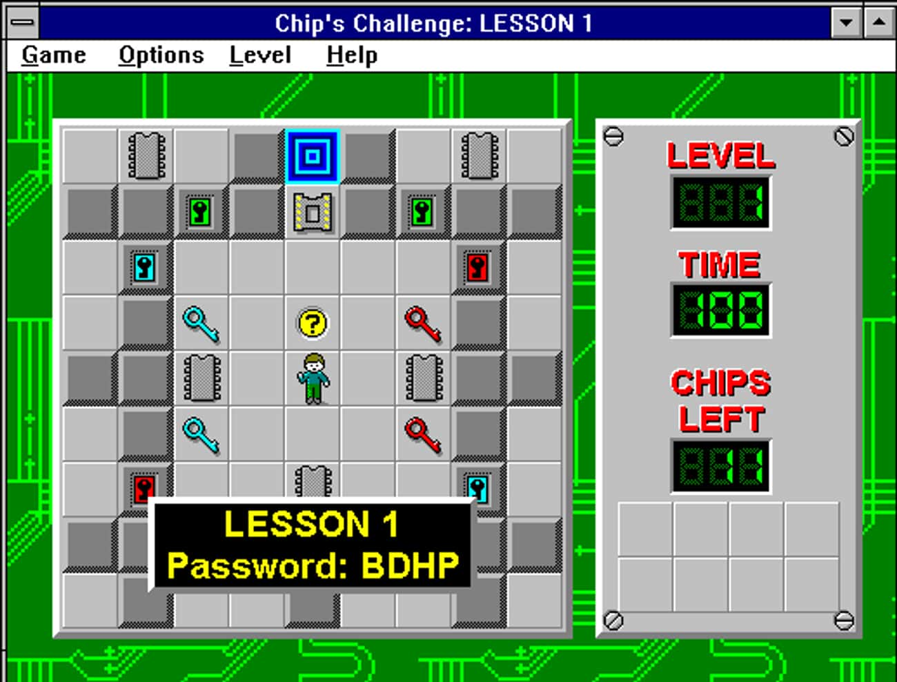
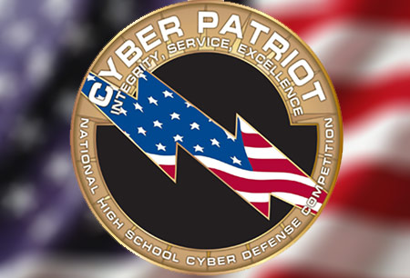
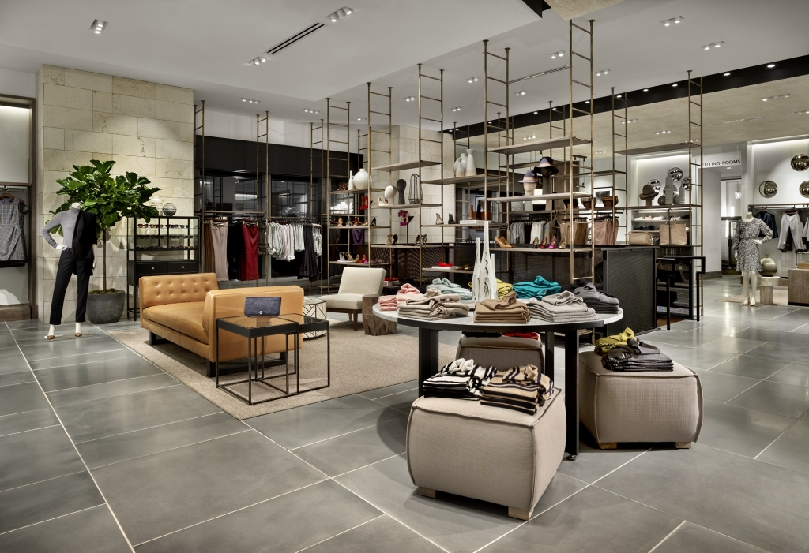

 For most of my childhood, I saw computers solely as a device to play games, like Chip's Challenge. I didn't understand how they worked but it didn't matter to me at the time. I remember my older cousin replacing our motherboard and was very fascinated with seeing the inside of the computer for the first time. It wasn't until years later that I would see the inside of a computer again. This time, we were upgrading our computer's memory, our family friend came over and explained to me how to upgrade computer parts and why it's necessary. That moment was a turning point for me, turning my curiosity to a passion.
 It was during high school that I started to look at computers as more of a career rather than a hobby. At the time, I wasn't sure what I wanted my concentration to be so I tried as many things as I could. I worked as a student-tech assist which was similar to working as a Tier 1 and 2 help desk with limited permissions. I took an A+ course as well as a network administration course which solidified my understanding of physical components as well as how computers communicated and worked with each other. During my senior year, I led my school's first Cyber Patriot team. The experience taught me a lot about leadership and the best ways to work with a team.
 After high school, I was working on my Associate's Degree in Information Technology while working in retail. It was during this time that my focus was more on my current job than it was towards my passion. I was doing well in class but I wasn't really doing anything beyond my class work to hone my skills. At the time I was more focused on my current job which led me to being promoted to a supervisor. It was also during this time that I was referred to my first job in IT, data centers.
I worked in data centers for a year. I worked for Softlayer, which allowed me to create servers per customer requests, monitor rack temperature, and how to properly cable-manage server racks. After Softlayer, I worked for Amazon Web Services as part of their decommissioning team. We worked on servers that customers no longer wanted and followed standard practice to ensure their data was handled properly. My contracts finished and I went back to retail.
My return to retail wasn't too bad, I started as a part-time employee and rose up to becoming a store manager. I felt that I've accomplished what I wanted in retail and started looking for another job. I found a job as a Network Logisitcs Coordinator for NonStopDelivery. It wasn't a field that I had any experience in but I knew that if I focused and worked hard, I will do well in the role. A couple of years later I got promoted to a supervisor and now currently lead my own team in my own region. Though I feel proud of my accomplishments in my role, my passion for computers started coming back. With today's advancments in self-taught courses, I was referred to App Academy by a close friend. I started the course and the excitement I felt when I was in high school learning everything for the first time came rushing back to me. It's going to take a lot of hard work and patience on my end, but if I stick with it, I know that I can find a job as a Software Engineer.
HTML, CSS, and Javascript